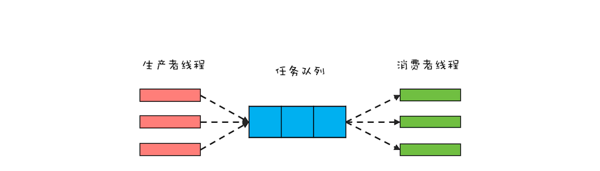
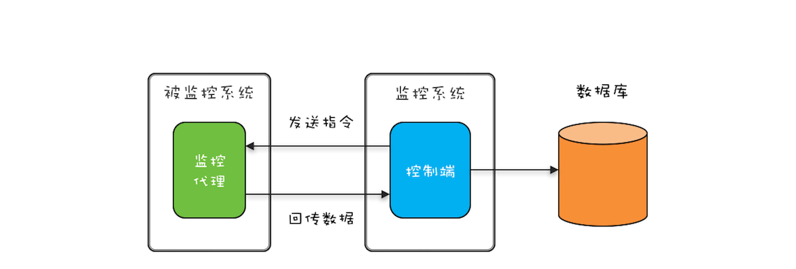

- 00 学习攻略 如何才能学好并发编程？.md.html
- 00 开篇词 你为什么需要学习并发编程？.md.html
- 01 可见性、原子性和有序性问题：并发编程Bug的源头.md.html
- 02 Java内存模型：看Java如何解决可见性和有序性问题.md.html
- 03 互斥锁（上）：解决原子性问题.md.html
- 04 互斥锁（下）：如何用一把锁保护多个资源？.md.html
- 05 一不小心就死锁了，怎么办？.md.html
- 06 用“等待-通知”机制优化循环等待.md.html
- 07 安全性、活跃性以及性能问题.md.html
- 08 管程：并发编程的万能钥匙.md.html
- 09 Java线程（上）：Java线程的生命周期.md.html
- 10 Java线程（中）：创建多少线程才是合适的？.md.html
- 11 Java线程（下）：为什么局部变量是线程安全的？.md.html
- 12 如何用面向对象思想写好并发程序？.md.html
- 13 理论基础模块热点问题答疑.md.html
- 14 Lock和Condition（上）：隐藏在并发包中的管程.md.html
- 15 Lock和Condition（下）：Dubbo如何用管程实现异步转同步？.md.html
- 16 Semaphore：如何快速实现一个限流器？.md.html
- 17 ReadWriteLock：如何快速实现一个完备的缓存？.md.html
- 18 StampedLock：有没有比读写锁更快的锁？.md.html
- 19 CountDownLatch和CyclicBarrier：如何让多线程步调一致？.md.html
- 20 并发容器：都有哪些“坑”需要我们填？.md.html
- 21 原子类：无锁工具类的典范.md.html
- 22 Executor与线程池：如何创建正确的线程池？.md.html
- 23 Future：如何用多线程实现最优的“烧水泡茶”程序？.md.html
- 24 CompletableFuture：异步编程没那么难.md.html
- 25 CompletionService：如何批量执行异步任务？.md.html
- 26 Fork_Join：单机版的MapReduce.md.html
- 27 并发工具类模块热点问题答疑.md.html
- 28 Immutability模式：如何利用不变性解决并发问题？.md.html
- 29 Copy-on-Write模式：不是延时策略的COW.md.html
- 3 个用户来信 打开一个新的并发世界.md.html
- 30 线程本地存储模式：没有共享，就没有伤害.md.html
- 31 Guarded Suspension模式：等待唤醒机制的规范实现.md.html
- 32 Balking模式：再谈线程安全的单例模式.md.html
- 33 Thread-Per-Message模式：最简单实用的分工方法.md.html
- 34 Worker Thread模式：如何避免重复创建线程？.md.html
- 35 两阶段终止模式：如何优雅地终止线程？.md.html
- 36 生产者-消费者模式：用流水线思想提高效率.md.html
- 37 设计模式模块热点问题答疑.md.html
- 38 案例分析（一）：高性能限流器Guava RateLimiter.md.html
- 39 案例分析（二）：高性能网络应用框架Netty.md.html
- 40 案例分析（三）：高性能队列Disruptor.md.html
- 41 案例分析（四）：高性能数据库连接池HiKariCP.md.html
- 42 Actor模型：面向对象原生的并发模型.md.html
- 43 软件事务内存：借鉴数据库的并发经验.md.html
- 44 协程：更轻量级的线程.md.html
- 45 CSP模型：Golang的主力队员.md.html
- 用户来信 真好，面试考到这些并发编程，我都答对了！.md.html
- 结束语 十年之后，初心依旧.md.html
- 捐赠
36 生产者-消费者模式：用流水线思想提高效率
前面我们在《34 | Worker Thread模式：如何避免重复创建线程？》中讲到，Worker Thread模式类比的是工厂里车间工人的工作模式。但其实在现实世界，工厂里还有一种流水线的工作模式，类比到编程领域，就是生产者-消费者模式。
生产者-消费者模式在编程领域的应用也非常广泛，前面我们曾经提到，Java线程池本质上就是用生产者-消费者模式实现的，所以每当使用线程池的时候，其实就是在应用生产者-消费者模式。
当然，除了在线程池中的应用，为了提升性能，并发编程领域很多地方也都用到了生产者-消费者模式，例如Log4j2中异步Appender内部也用到了生产者-消费者模式。所以今天我们就来深入地聊聊生产者-消费者模式，看看它具体有哪些优点，以及如何提升系统的性能。
生产者-消费者模式的优点
生产者-消费者模式的核心是一个任务队列，生产者线程生产任务，并将任务添加到任务队列中，而消费者线程从任务队列中获取任务并执行。下面是生产者-消费者模式的一个示意图，你可以结合它来理解。

生产者-消费者模式示意图
从架构设计的角度来看，生产者-消费者模式有一个很重要的优点，就是解耦。解耦对于大型系统的设计非常重要，而解耦的一个关键就是组件之间的依赖关系和通信方式必须受限。在生产者-消费者模式中，生产者和消费者没有任何依赖关系，它们彼此之间的通信只能通过任务队列，所以生产者-消费者模式是一个不错的解耦方案。
除了架构设计上的优点之外，生产者-消费者模式还有一个重要的优点就是支持异步，并且能够平衡生产者和消费者的速度差异。在生产者-消费者模式中，生产者线程只需要将任务添加到任务队列而无需等待任务被消费者线程执行完，也就是说任务的生产和消费是异步的，这是与传统的方法之间调用的本质区别，传统的方法之间调用是同步的。
你或许会有这样的疑问，异步化处理最简单的方式就是创建一个新的线程去处理，那中间增加一个“任务队列”究竟有什么用呢？我觉得主要还是用于平衡生产者和消费者的速度差异。我们假设生产者的速率很慢，而消费者的速率很高，比如是1:3，如果生产者有3个线程，采用创建新的线程的方式，那么会创建3个子线程，而采用生产者-消费者模式，消费线程只需要1个就可以了。Java语言里，Java线程和操作系统线程是一一对应的，线程创建得太多，会增加上下文切换的成本，所以Java线程不是越多越好，适量即可。而生产者-消费者模式恰好能支持你用适量的线程。
支持批量执行以提升性能
前面我们在《33 | Thread-Per-Message模式：最简单实用的分工方法》中讲过轻量级的线程，如果使用轻量级线程，就没有必要平衡生产者和消费者的速度差异了，因为轻量级线程本身就是廉价的，那是否意味着生产者-消费者模式在性能优化方面就无用武之地了呢？当然不是，有一类并发场景应用生产者-消费者模式就有奇效，那就是批量执行任务。
例如，我们要在数据库里INSERT 1000条数据，有两种方案：第一种方案是用1000个线程并发执行，每个线程INSERT一条数据；第二种方案是用1个线程，执行一个批量的SQL，一次性把1000条数据INSERT进去。这两种方案，显然是第二种方案效率更高，其实这样的应用场景就是我们上面提到的批量执行场景。
在《35 | 两阶段终止模式：如何优雅地终止线程？》文章中，我们提到一个监控系统动态采集的案例，其实最终回传的监控数据还是要存入数据库的（如下图）。但被监控系统往往有很多，如果每一条回传数据都直接INSERT到数据库，那么这个方案就是上面提到的第一种方案：每个线程INSERT一条数据。很显然，更好的方案是批量执行SQL，那如何实现呢？这就要用到生产者-消费者模式了。

动态采集功能示意图
利用生产者-消费者模式实现批量执行SQL非常简单：将原来直接INSERT数据到数据库的线程作为生产者线程，生产者线程只需将数据添加到任务队列，然后消费者线程负责将任务从任务队列中批量取出并批量执行。
在下面的示例代码中，我们创建了5个消费者线程负责批量执行SQL，这5个消费者线程以 while(true){} 循环方式批量地获取任务并批量地执行。需要注意的是，从任务队列中获取批量任务的方法pollTasks()中，首先是以阻塞方式获取任务队列中的一条任务，而后则是以非阻塞的方式获取任务；之所以首先采用阻塞方式，是因为如果任务队列中没有任务，这样的方式能够避免无谓的循环。
//任务队列
BlockingQueue<Task> bq=new
LinkedBlockingQueue<>(2000);
//启动5个消费者线程
//执行批量任务
void start() {
ExecutorService es=executors
.newFixedThreadPool(5);
for (int i=0; i<5; i++) {
es.execute(()->{
try {
while (true) {
//获取批量任务
List<Task> ts=pollTasks();
//执行批量任务
execTasks(ts);
}
} catch (Exception e) {
e.printStackTrace();
}
});
}
}
//从任务队列中获取批量任务
List<Task> pollTasks()
throws InterruptedException{
List<Task> ts=new LinkedList<>();
//阻塞式获取一条任务
Task t = bq.take();
while (t != null) {
ts.add(t);
//非阻塞式获取一条任务
t = bq.poll();
}
return ts;
}
//批量执行任务
execTasks(List<Task> ts) {
//省略具体代码无数
}
支持分阶段提交以提升性能
利用生产者-消费者模式还可以轻松地支持一种分阶段提交的应用场景。我们知道写文件如果同步刷盘性能会很慢，所以对于不是很重要的数据，我们往往采用异步刷盘的方式。我曾经参与过一个项目，其中的日志组件是自己实现的，采用的就是异步刷盘方式，刷盘的时机是：
- ERROR级别的日志需要立即刷盘；
- 数据积累到500条需要立即刷盘；
- 存在未刷盘数据，且5秒钟内未曾刷盘，需要立即刷盘。
这个日志组件的异步刷盘操作本质上其实就是一种分阶段提交。下面我们具体看看用生产者-消费者模式如何实现。在下面的示例代码中，可以通过调用 info()和error() 方法写入日志，这两个方法都是创建了一个日志任务LogMsg，并添加到阻塞队列中，调用 info()和error() 方法的线程是生产者；而真正将日志写入文件的是消费者线程，在Logger这个类中，我们只创建了1个消费者线程，在这个消费者线程中，会根据刷盘规则执行刷盘操作，逻辑很简单，这里就不赘述了。
class Logger {
//任务队列
final BlockingQueue<LogMsg> bq
= new BlockingQueue<>();
//flush批量
static final int batchSize=500;
//只需要一个线程写日志
ExecutorService es =
Executors.newFixedThreadPool(1);
//启动写日志线程
void start(){
File file=File.createTempFile(
"foo", ".log");
final FileWriter writer=
new FileWriter(file);
this.es.execute(()->{
try {
//未刷盘日志数量
int curIdx = 0;
long preFT=System.currentTimeMillis();
while (true) {
LogMsg log = bq.poll(
5, TimeUnit.SECONDS);
//写日志
if (log != null) {
writer.write(log.toString());
++curIdx;
}
//如果不存在未刷盘数据，则无需刷盘
if (curIdx <= 0) {
continue;
}
//根据规则刷盘
if (log!=null && log.level==LEVEL.ERROR ||
curIdx == batchSize ||
System.currentTimeMillis()-preFT>5000){
writer.flush();
curIdx = 0;
preFT=System.currentTimeMillis();
}
}
}catch(Exception e){
e.printStackTrace();
} finally {
try {
writer.flush();
writer.close();
}catch(IOException e){
e.printStackTrace();
}
}
});
}
//写INFO级别日志
void info(String msg) {
bq.put(new LogMsg(
LEVEL.INFO, msg));
}
//写ERROR级别日志
void error(String msg) {
bq.put(new LogMsg(
LEVEL.ERROR, msg));
}
}
//日志级别
enum LEVEL {
INFO, ERROR
}
class LogMsg {
LEVEL level;
String msg;
//省略构造函数实现
LogMsg(LEVEL lvl, String msg){}
//省略toString()实现
String toString(){}
}
总结
Java语言提供的线程池本身就是一种生产者-消费者模式的实现，但是线程池中的线程每次只能从任务队列中消费一个任务来执行，对于大部分并发场景这种策略都没有问题。但是有些场景还是需要自己来实现，例如需要批量执行以及分阶段提交的场景。
生产者-消费者模式在分布式计算中的应用也非常广泛。在分布式场景下，你可以借助分布式消息队列（MQ）来实现生产者-消费者模式。MQ一般都会支持两种消息模型，一种是点对点模型，一种是发布订阅模型。这两种模型的区别在于，点对点模型里一个消息只会被一个消费者消费，和Java的线程池非常类似（Java线程池的任务也只会被一个线程执行）；而发布订阅模型里一个消息会被多个消费者消费，本质上是一种消息的广播，在多线程编程领域，你可以结合观察者模式实现广播功能。
课后思考
在日志组件异步刷盘的示例代码中，写日志的线程以 while(true){} 的方式执行，你有哪些办法可以优雅地终止这个线程呢？
this.writer.execute(()->{
try {
//未刷盘日志数量
int curIdx = 0;
long preFT=System.currentTimeMillis();
while (true) {
......
}
} catch(Exception e) {}
}
欢迎在留言区与我分享你的想法，也欢迎你在留言区记录你的思考过程。感谢阅读，如果你觉得这篇文章对你有帮助的话，也欢迎把它分享给更多的朋友。
© 2019 - 2023 Liangliang Lee. Powered by gin and hexo-theme-book.